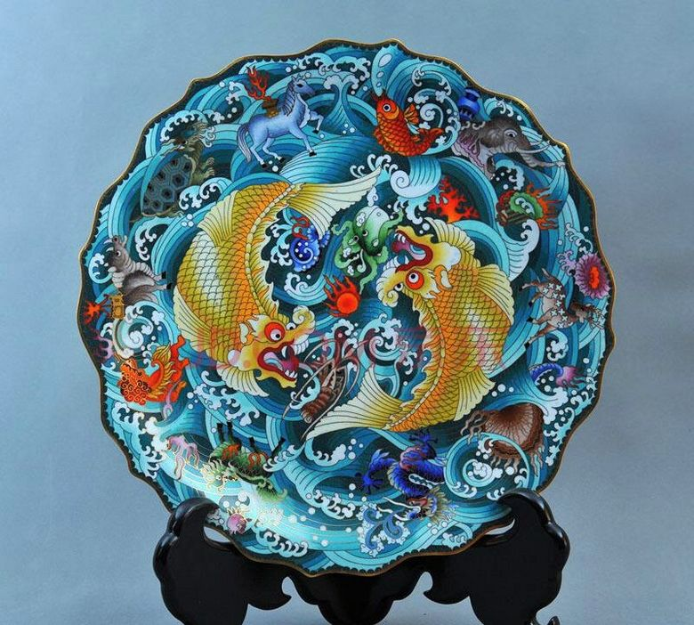
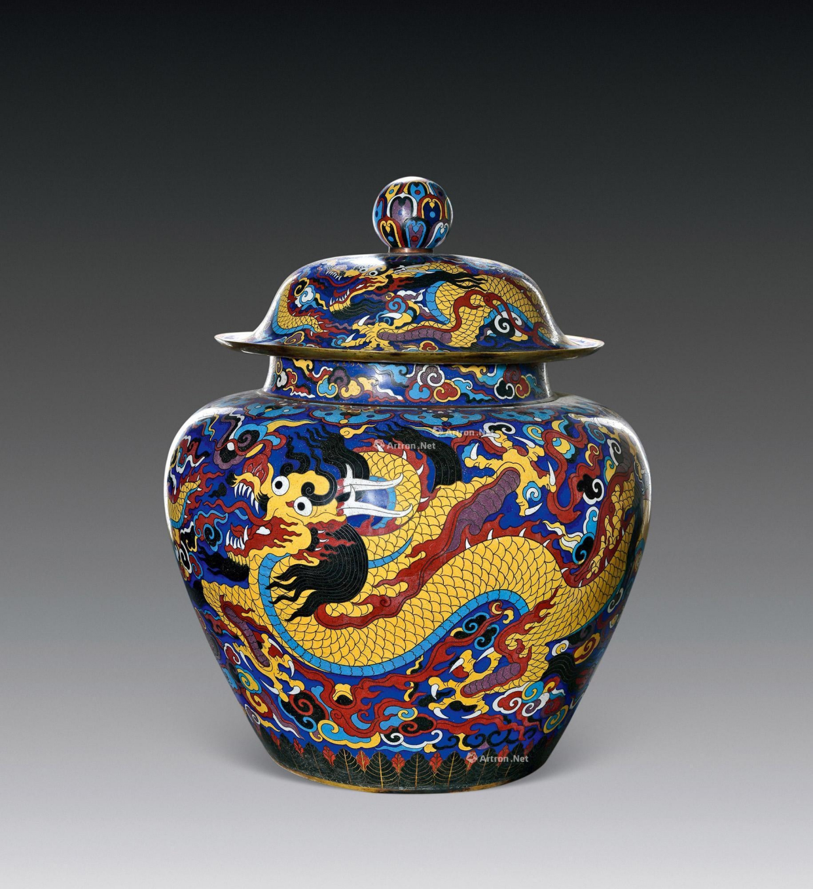

设计纸稿设计胎图、丝工图纸、蓝图（点蓝的色稿）： 首先有设计师设计胎图、丝工图纸、蓝图（点蓝的色稿），转成拷贝纸稿以备下一道工序应用。 |
|---|
|

胎型制作先将紫铜片按照图纸要求剪出各种不同形状，并用铁锤敲打成各种形状的铜胎，然后将其各部位衔接上好焊药，经高温焊接后便成为器皿铜胎造型 |
|

掐丝过程用镊子将压扁了的细紫铜丝掐、掰成各种精美的图案花纹，再蘸上白芨粘附在铜胎上，然后筛上银焊药粉，经900度的高温焙烧，将铜丝花纹牢牢地焊接在铜胎上。 |

点蓝过程经过掐丝工序后的胎体，再经烧焊、酸洗、平活、正丝等工序后，方可进入点蓝工序。点蓝是艺师把事先备好的珐琅釉料，依照图案所标示的颜色，用由铜丝锤制成的小铲形工具，一铲铲地将珐琅釉料填充入焊好的铜丝纹饰框架中。 |

烧蓝过程是将整个胎体填满色釉后，再拿到炉温大约800℃的高炉中用一些矿物石头粉作燃料烘烧，色釉由砂粒状固体熔化为液体，待冷却后成为固着在胎体上的绚丽的色釉，此时色釉低于铜丝高度，所以得再填一次色釉，再经烧结，一般要连续四五次，直至将纹样内填到与掐丝纹相平。 |

磨光过程用粗砂石、黄石、木炭分三次将凹凸不平的蓝釉磨平，凡不平之处都需经补釉烧熔后反复打磨，最后用木炭、刮刀将没有蓝釉的铜线、底线、口线刮平磨亮。 |

镀金过程将磨平、磨亮的景泰蓝经酸洗、去污、沙亮后，放入镀金液糟中，然后通上电流，几分钟后黄金液便牢牢附首在景泰蓝金属部位上了。再经水洗冲净干燥处理后，一件斑斓夺目的景泰蓝便脱颖而出了。镀好金的景泰蓝再配上一座雕刻得玲珑剔透的硬木底托，更显出景泰蓝雍容华贵、端庄秀美的姿色。 |
彩釉金丝，新起之蓝
welcome ！